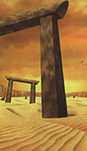
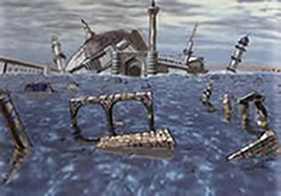

The Garil Desert Theory
 The Garil Desert from Panzer Dragoon Saga |
Episode 1 from Panzer Dragoon, had the dragon rider Kyle riding through a vast body of water full of decimated ruins, while fighting off a variety of ancient creatures, all of which concluded with an epic boss battle against a ship from the Ancient Age. Kyle valiantly, with the help of his dragon, destroyed the massive ship and watched it separate into two pieces as it crashed and sank to its watery grave. Upon entering the Garil Desert in Panzer Dragoon Saga some interesting observations can be made. Ruins similar to episode 1 in PD can be seen sticking out of the sand. Further into the level, a sunken ship makes itself known. Examining the ship reveals it is an ancient ship from the Ancient Age. Could this be the ship that Kyle destroyed 30 years ago? It looks strikingly similar. The top half is nowhere to be found, as it did separate after Kyle destroyed it. Another question remains: if this is the level from episode 1 in Panzer Dragoon, where has all the water gone? Where are the ancient flying creatures that Kyle fought? One theory could be that over a period of 30 years, the water may have been completely dried up, due to the Towers manipulating the environment. Dracolyths can be found flying around in Uru. This is one of the creatures that can also be found in episode 1 in Panzer Dragoon. When you read the data on the Dracolyth in Panzer Dragoon Saga, it says that flocks of Dracolyth are in a constant state of migration. I believe the Dracolyth's, once their environment changed, left what is now called the Garil Desert and migrated to Uru. Uru is very similar to episode 1 in Panzer Dragoon; it’s almost a perfect match. Another interesting observation in the Garil Desert is the Blue ruins where you fight the Gigra. Do these ruins have any relation to the palace that Kyle enters, before fighting the airship? They look nothing alike, but could be related somehow. All of these observations leave some interesting thoughts
to be formed about the relation the Garil Desert has to episode 1 in
Panzer Dragoon. |
|
 Episode 1 from Panzer Dragoon. |